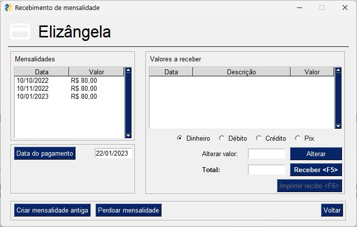

Eu comecei a programar em Python em 2021, sem conhecimento prévio da linguagem. Escolhi Python depois de
algumas pesquisas onde descobri que a linguagem é de fácil assimilação por iniciantes, e ao mesmo tempo
sólida e com bastante tempo de desenvolvimento no mercado. Também levei em conta sua utilização no mercado.
Este programa foi desenvolvido para gerenciar o Estúdio Lótus, um estúdio de condicionamento físico
multidisciplinar mantido por minha companheira na cidade de Ouro Fino, MG. A princípio a idéia era
acompanhar o fluxo de alunos e vencimentos de mensalidades, porém por fim o sistema englobou a contabilidade
do Estúdio também.
Interface principal do programa. Aqui estão dispostas todas as funções relacionadas ao gerenciamento de
alunos em uma única interface, facilitando o trabalho do usuário. Basta selecionar o aluno desejado
na lista e acessar as funções através dos botões da interface. A tabela principal tem um esquema de cores
nas linhas para mostrar imediatamente o status do aluno, ou seja, se a última mensalidade está atrasada,
se o plano está próximo de acabar ou se o aluno está marcado como inativo.
Página de cadastro de aluno.
Página de detalhes do aluno.

Página de recebimento de mensalidade.
Relatório de recebimento de mensalidades.
Página principal da área de contabilidade.